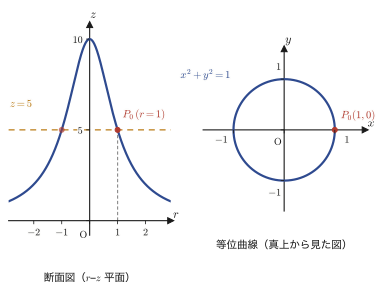
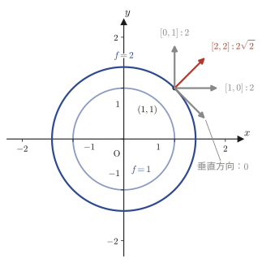

第18章スカラー場・ベクトル場と勾配
第15章から第17章までは，空間の1つの点やベクトル値関数の話——1本のベクトル $\vec a$ や，パラメータ $t$ に沿って動く1本の曲線 $\vec P(t)$——を扱ってきた．しかし物理や工学の現場で本当に扱いたいのは，たいてい「空間のあらゆる点に，何かの量が対応づけられている」という状況である．たとえば，部屋の中のどの点にも気温という数が対応している（部屋の温度分布）．あるいは，流れる川のどの点にも流れの速さと向き，つまりベクトルが対応している（流速分布）．前者をスカラー場，後者をベクトル場と呼ぶ．本章では，この2つの「場」という考え方を導入し，場の中でとくに重要な操作である勾配（gradient）——スカラー場からベクトル場を作り出す微分の道具——を学ぶ．
勾配ベクトル $\nabla f$ は，実は諸君はすでに一度だけ目にしている．第6章6.7節のラグランジュの未定乗数法で，「等高線の勾配ベクトル $\nabla f$ と制約直線の勾配ベクトル $\nabla g$ が平行になる点で極値をとる」という説明のなかに，記号だけ借りる形でこっそり登場していた．本章では，あの $\nabla$ という記号が何者で，何を計算しているのか，そしてなぜそれが「等高線に垂直で，関数の値が最も速く増える方向を指す」のかを，最初からきちんと定義し，証明していく．この章の到達点は，勾配ベクトル1本を使って，曲面の接平面の方程式をものの数行で求められるようになることである．
- スカラー場・ベクトル場の定義と具体例（温度分布・速度場）
- 等位曲線・等位曲面——第6章で学んだ「等高線」の一般化——と，流線の定義・微分方程式 $\dfrac{dx}{f}=\dfrac{dy}{g}=\dfrac{dz}{h}$
- 勾配ベクトル（gradient）$\nabla f=\grad f$ の定義と，ナブラ（デル）演算子 $\nabla$
- 勾配の公式：線形性・積・商・合成関数の公式，および $\nabla|\vec P|,\ \nabla|\vec P|^n,\ \nabla\ln|\vec P|$
- 勾配ベクトルの幾何学的な意味——等位曲線・等位曲面に垂直で，関数の値が最も速く増加する方向を指すこと
- 勾配ベクトルを用いた接平面の方程式の求め方
もとにしたノート：望月泰英『数学ノート ベクトル解析』 pp. 25–32．
18.1 スカラー場とベクトル場
まず，具体例から始めよう．冬の部屋の中を思い浮かべてほしい．暖房の近くは暖かく，窓際は冷たい——部屋の中のどの点にも，気温という1つの実数が対応している．この「点ごとに数が1つ決まる」という状況を，数式では2変数（平面）または3変数（空間）の関数 $f(x,y)$ や $f(x,y,z)$ として表せることは，すでに第6章で学んだ．一方，風の吹く屋外を思い浮かべると，こんどはどの点にも，風の強さと向き，つまりベクトルが対応している．同じ「場（field）」という言葉を使うが，対応するのが数（スカラー，scalar）かベクトル（vector）かで区別する．
定義18.1 スカラー場
平面または空間の領域 $D$ 内の各点 $P$ に，スカラー（実数）$f(P)$ が対応づけられているとき，この領域 $D$ をスカラー場（scalar field）という．$P$ の座標を使って $f(x,y)$（平面）や $f(x,y,z)$（空間）と書けば，これは第6章で学んだ多変数関数そのものである——「場」という呼び方は，関数を「空間に広がる量の分布」として捉え直したものにすぎない．
定義18.2 ベクトル場
平面または空間の領域 $D$ 内の各点 $P$ に，ベクトル $\vec f(P)$ が対応づけられているとき，この領域 $D$ をベクトル場（vector field）という．平面なら $\vec f(x,y)=[f(x,y),\,g(x,y)]$，空間なら $\vec f(x,y,z)=[f(x,y,z),\,g(x,y,z),\,h(x,y,z)]$ のように，各成分がそれ自身スカラー場になっている，と考えるとよい．
本章以降（18章〜20章）に登場する $f,g,h$ などの多変数関数は，特に断らない限りすべて全微分可能（第6章6.3節）であるとする．全微分可能であれば，偏導関数がすべて存在し，かつ関数のグラフに接平面がきちんと引ける——本章で扱う勾配ベクトルは，この接平面の情報を取り出す道具である．
例題18.1 スカラー場・ベクトル場の判定と値の計算
(a) $f(x,y,z)=x^2+2yz$ はスカラー場，$\vec F(x,y,z)=[y,\,z,\,x]$ はベクトル場である．点 $(1,-1,2)$ における $f$ の値と $\vec F$ の値をそれぞれ求めよ．
解答 (a) $f$ は各点に実数（スカラー）を対応させるのでスカラー場，$\vec F$ は各点に3成分のベクトルを対応させるのでベクトル場である．定義18.1・定義18.2にしたがって，点の座標をそのまま代入すればよい．
$$ f(1,-1,2) = 1^2+2\cdot(-1)\cdot2 = 1-4 = -3 $$ $$ \vec F(1,-1,2) = [\,(-1),\ 2,\ 1\,] = [-1,\,2,\,1] $$（sympyで検算済み：$f=-3$，$\vec F=(-1,2,1)$）
18.2 等位曲線と等位曲面
スカラー場の「形」をつかむのに一番よく使われる道具が，等位曲線・等位曲面である．実はこれは新しい概念ではない．第6章6.1節で，2変数関数 $z=f(x,y)$ のグラフ（曲面）の形を調べるために，「高さ $z=c$ を固定したときの $xy$ 平面上の曲線」——等高線（contour line）——を考えた．等位曲線とは，まさにこの等高線のことを，スカラー場という言葉で呼び直したものである．3変数（空間）に拡張すると，等高線は曲面（等位曲面）になる．
定義18.3 等位曲線
平面スカラー場 $D$ に対応するスカラー値関数を $f(x,y)$ とし，領域 $D$ 内に1点 $P_0(x_0,y_0)$ をとる．このとき，方程式
$$ f(x,y)=f(x_0,y_0) $$を満たす点 $P(x,y)$ の全体は，（多くの場合）1つの曲線を描く．この曲線を，$P_0$ を通る等位曲線（level curve）という．要するに，ある1点 $P_0$ での $f$ の値を求め，それと同じ値になる点をすべて集めてできる曲線が等位曲線である．
例18.1 平面スカラー場の等位曲線
平面スカラー場 $f(x,y)=\dfrac{10}{x^2+y^2+1}$ を考える．点 $P_0(1,0)$ を通る等位曲線を求めよ．
解答 まず $P_0(1,0)$ における $f$ の値を求める．
$$ f(1,0) = \frac{10}{1^2+0^2+1} = \frac{10}{2} = 5 $$定義18.3より，$P_0$ を通る等位曲線は，方程式 $f(x,y)=5$ を満たす点の集合である．これを解くと，
$$ \frac{10}{x^2+y^2+1} = 5 $$両辺に $x^2+y^2+1$（これは常に正なので0で割る心配はない）を掛けて整理すると，
$$ x^2+y^2+1 = \frac{10}{5} = 2 \qquad\therefore\ x^2+y^2 = 1 $$となる．つまり，$P_0(1,0)$ を通る等位曲線は，原点を中心とする半径 $1$ の円 $x^2+y^2=1$ である（ちょうど $P_0$ もこの円の上にある：$1^2+0^2=1$ で確認できる）．（sympyで検算済み）

定義18.4 等位曲面
空間スカラー場 $D$ に対応するスカラー値関数を $f(x,y,z)$ とし，領域 $D$ 内に1点 $P_0(x_0,y_0,z_0)$ をとる．このとき，方程式
$$ f(x,y,z)=f(x_0,y_0,z_0) $$を満たす点 $P(x,y,z)$ の全体は，（多くの場合）1つの曲面を描く．この曲面を，$P_0$ を通る等位曲面（level surface）という．平面のときの「曲線」が，空間では「曲面」に格上げされるだけで，考え方はまったく同じである．
例18.2 空間スカラー場の等位曲面
空間スカラー場 $f(x,y,z)=\dfrac{3x^2+2y^2+z^2}{2x^2+y^2+1}$ を考える．点 $P_0(0,0,1)$ を通る等位曲面を求めよ．
解答 $P_0(0,0,1)$ における $f$ の値を求めると，
$$ f(0,0,1) = \frac{3\cdot0^2+2\cdot0^2+1^2}{2\cdot0^2+0^2+1} = \frac{1}{1} = 1 $$定義18.4より，$P_0$ を通る等位曲面は $f(x,y,z)=1$ を満たす点の集合である．
$$ \frac{3x^2+2y^2+z^2}{2x^2+y^2+1} = 1 $$両辺に $2x^2+y^2+1$（つねに正）を掛けると，
$$ 3x^2+2y^2+z^2 = 2x^2+y^2+1 $$右辺の $2x^2+y^2$ を左辺に移項して整理すると，
$$ (3x^2-2x^2)+(2y^2-y^2)+z^2 = 1 \qquad\therefore\ x^2+y^2+z^2 = 1 $$となる．つまり，$P_0(0,0,1)$ を通る等位曲面は，原点を中心とする半径 $1$ の球面である（$P_0$ 自身がこの球面上の「北極」にあたる点であることも，$0^2+0^2+1^2=1$ で確認できる）．（sympyで検算済み）
例題18.2 等位曲線・等位曲面を求める（ノートとは別の関数で）
(a) 平面スカラー場 $f(x,y)=x^2-4y$ を考える．点 $P_1(2,1)$ を通る等位曲線を求めよ．
(b) 空間スカラー場 $f(x,y,z)=x^2+y^2-2z$ を考える．点 $P_2(1,1,1)$ を通る等位曲面を求めよ．
解答 (a) まず，定義18.3にしたがって，$P_1(2,1)$ における $f$ の値を求める．
$$ f(2,1) = 2^2-4\cdot1 = 4-4 = 0 $$したがって，$P_1$ を通る等位曲線は，方程式 $f(x,y)=0$ を満たす点の集合である．
$$ x^2-4y = 0 \qquad\Longleftrightarrow\qquad y = \frac{x^2}{4} $$すなわち，$P_1(2,1)$ を通る等位曲線は，放物線 $y=\dfrac{x^2}{4}$ である（$P_1$ がこの上にあることは，$x=2$ を代入すると $y=\dfrac{2^2}{4}=1$ となることで確認できる）．
(b) 同様に，定義18.4にしたがって，$P_2(1,1,1)$ における $f$ の値を求める．
$$ f(1,1,1) = 1^2+1^2-2\cdot1 = 1+1-2 = 0 $$したがって，$P_2$ を通る等位曲面は，方程式 $f(x,y,z)=0$ を満たす点の集合である．
$$ x^2+y^2-2z = 0 \qquad\Longleftrightarrow\qquad z = \frac{x^2+y^2}{2} $$すなわち，$P_2(1,1,1)$ を通る等位曲面は，回転放物面 $z=\dfrac{x^2+y^2}{2}$ である（$P_2$ がこの上にあることは，$x=y=1$ を代入すると $z=\dfrac{1^2+1^2}{2}=1$ となることで確認できる）．（sympyで検算済み）
18.3 流線
ベクトル場についても，その「形」を目で見えるようにする道具がある．風の流れを描いた天気図の矢印を思い浮かべてほしい——ばらばらの矢印を見るだけでも風の様子はわかるが，矢印に沿ってなめらかな曲線（風の通り道）を1本引いてやると，流れの全体像がぐっとつかみやすくなる．この「矢印（ベクトル場）に沿う曲線」を流線という．
定義18.5 流線
ベクトル場 $D$ に対応するベクトル値関数を $\vec f(P)$ とする．領域 $D$ 内にある曲線 $C$ があって，$C$ 上の各点 $P$ において，$\vec f(P)$ がその点で $C$ に接する（$C$ の接線ベクトル）とき，この曲線 $C$ を流線（streamline）という．
流線を式で求める方法を導いておこう．曲線 $C$ を，パラメータ $t$ を使って $\vec P(t)=[x(t),y(t),z(t)]$ と表す（第17章で学んだ，ベクトル値関数によるパラメータ表示である）．このとき $C$ の接線ベクトルは，
$$ \frac{d\vec P}{dt} = \left[\frac{dx}{dt},\,\frac{dy}{dt},\,\frac{dz}{dt}\right] $$である（第17章で学んだベクトル値関数の微分——各成分をそれぞれ $t$ で微分するだけでよかった）．定義18.5より，$\vec f(P)=[f,g,h]$（各成分は $x,y,z$ の関数だが，$C$ の上では $t$ の関数でもある）も同じ点で $C$ に接するから，$\vec f(P)$ と $\vec P'(t)$ は平行なベクトルである．すなわち，ある0でない実数 $k$ が存在して，
$$ [f,\,g,\,h] = k\left[\frac{dx}{dt},\,\frac{dy}{dt},\,\frac{dz}{dt}\right] $$が成り立つ（$\vec f(P)\neq\vec 0$ とする）．2つのベクトルが平行で，比例定数が共通の $k$ であるということは，対応する成分どうしの比がすべて等しいということだから，
$$ f : g : h = \frac{dx}{dt} : \frac{dy}{dt} : \frac{dz}{dt} $$となる．これを比の形から分数の形に書き直すと，
$$ \frac{\dfrac{dx}{dt}}{f} = \frac{\dfrac{dy}{dt}}{g} = \frac{\dfrac{dz}{dt}}{h} $$となり，各辺の分子・分母に現れる $dt$ を（形式的に）払うと，次の関係式を得る．
これは $x,y,z$ を変数とする（$t$ を陽に含まない）微分方程式であり，これを解く（連立した2つの1階微分方程式を解く）ことで，流線の方程式が求まる．
例題18.3 流線の方程式を求める
平面ベクトル場 $\vec F(x,y)=[x,\,-y]$ の流線を求めよ．
解答 $\vec F=[f,g]=[x,-y]$ だから，式 \eqref{eq:18-streamline}（$z$ 成分がない平面の場合）は，
$$ \frac{dx}{x} = \frac{dy}{-y} $$である．両辺をそれぞれ積分する（$x\neq0,\,y\neq0$ とする）．
$$ \int\frac{dx}{x} = -\int\frac{dy}{y} \quad\Longrightarrow\quad \ln|x| = -\ln|y| + C_1 $$右辺の $-\ln|y|$ を左辺に移項すると $\ln|x|+\ln|y|=C_1$，すなわち $\ln|xy|=C_1$ となるから，両辺の指数をとって（$e^{C_1}$ を改めて正の定数 $C_2$ とおく），
$$ |xy| = C_2 \quad\Longrightarrow\quad xy = C\ (C\text{ は0でない実数の定数}) $$を得る．したがって，流線は反比例のグラフの形をした双曲線群 $xy=C$ である．（検算：もし曲線 $x(t),y(t)$ が $\dfrac{dx}{dt}=x,\ \dfrac{dy}{dt}=-y$ を満たすなら，$\dfrac{d}{dt}(xy)=y\dfrac{dx}{dt}+x\dfrac{dy}{dt}=yx+x(-y)=0$ となり，$xy$ が $t$ によらず一定であることが確認できる．sympyで検算済み）
18.4 勾配ベクトル（gradient）の定義
ここからが本章の主役である．スカラー場 $f$ が与えられたとき，各点でその「増え方」をひとまとめにしたベクトルを作ることができる．それがどんなものか，定義を与える前に，具体的な数値で確かめてみよう．
スカラー場 $f(x,y)=x^2+y^2$ を考え，点 $(1,1)$ における「$f$ の増え方」を調べる．偏微分（第6章6.2節）を使うと，
$$ \pdiff{f}{x} = 2x,\qquad \pdiff{f}{y} = 2y $$だから，点 $(1,1)$ ではどちらも $2$ である．いま，2つの偏微分係数を並べたベクトル $[2,\,2]$ を作り，これを「傾きベクトル」と仮に呼んでみる．そして，点 $(1,1)$ から，いろいろな向きの単位ベクトル $\vec e$ の方向に少しだけ動いたとき，$f$ がどれくらいの割合で増えるか（これを $[2,2]\cdot\vec e$ という内積で見積もる——全微分 $\Delta f\fallingdotseq\pdiff{f}{x}\Delta x+\pdiff{f}{y}\Delta y$ の考え方そのものである）を比べてみよう．
(i) $\vec e=[1,0]$（$x$ 軸方向）：増加率 $= 2\cdot1+2\cdot0 = 2$．
(ii) $\vec e=[0,1]$（$y$ 軸方向）：増加率 $= 2\cdot0+2\cdot1 = 2$．
(iii) $\vec e=\left[\dfrac{1}{\sqrt2},\dfrac{1}{\sqrt2}\right]$（傾きベクトル $[2,2]$ と同じ向き）：増加率 $=2\cdot\dfrac1{\sqrt2}+2\cdot\dfrac1{\sqrt2}=\dfrac{4}{\sqrt2}=2\sqrt2\approx2.83$．
(iv) $\vec e=\left[\dfrac{1}{\sqrt2},-\dfrac{1}{\sqrt2}\right]$（傾きベクトルと垂直な向き）：増加率 $=2\cdot\dfrac1{\sqrt2}+2\cdot\left(-\dfrac1{\sqrt2}\right)=0$．
見てのとおり，$x$ 軸方向・$y$ 軸方向よりも，傾きベクトル $[2,2]$ と同じ向きに進んだとき（(iii)）の方が増加率が大きく（$2\sqrt2>2$），逆に傾きベクトルと垂直な向き（(iv)）では，$f$ はまったく増えも減りもしない．つまり，この「傾きベクトル」は，$f$ の値が最も速く増える方向をぴたりと指し示している——これが，これから定義する勾配ベクトル（gradient）の正体である．（この事実の一般的な証明は18.6節で改めて行う．）

この「傾きベクトル」，つまり全ての偏導関数を並べたベクトルを，一般に次のように定義する．
定義18.6 勾配ベクトル（gradient）
(I) 平面スカラー場の場合：平面スカラー場 $f(x,y)$ の勾配ベクトル（gradient）を $\grad f$ と表記し，
$$ \grad f = \nabla f = \left[\pdiff{f}{x},\ \pdiff{f}{y}\right] $$と定義する．（左辺・中辺はスカラー場 $f$ から作られるベクトルであることに注意．）
(II) 空間スカラー場の場合：空間スカラー場 $f(x,y,z)$ の勾配ベクトルを $\grad f$ と表記し，
$$ \grad f = \nabla f = \left[\pdiff{f}{x},\ \pdiff{f}{y},\ \pdiff{f}{z}\right] $$と定義する．
記号について：$\nabla$（ナブラ）
$\grad$ は英語 gradient（勾配，傾き）の略である．また記号 $\nabla$ はナブラ（nabla）またはデル（del），あるいはハミルトン演算子（Hamilton operator，アイルランドの数学者ウィリアム・ローワン・ハミルトン William Rowan Hamilton に由来）と呼ばれる．$\nabla$ 自体は「関数を受け取ってベクトルを返す道具」——形式的には $\nabla=\left[\pdiff{}{x},\pdiff{}{y},\pdiff{}{z}\right]$ という，成分が微分演算子であるベクトルだと考えるとよい．$\nabla$ は，本章の $\grad$（勾配）だけでなく，次章で学ぶ発散（$\mathrm{div}$）・回転（$\mathrm{rot}$）という2つの重要な演算も表すのに使われる，多目的な記号である．実は諸君は，第6章6.7節（ラグランジュの未定乗数法）で，$\nabla f,\nabla g$ という記法をすでに一度見ている．そこでは「勾配ベクトルが平行になる点」とだけ説明したが，その勾配ベクトルの正体が，まさにいま定義した $\nabla f$ である．
例題18.4 勾配ベクトルの計算
空間スカラー場 $f(x,y,z)=x^2yz-y^3$ の勾配ベクトル $\nabla f$ を求め，点 $(1,2,-1)$ における値を求めよ．
解答 定義18.6(II)にしたがって，$f$ を $x,y,z$ のそれぞれについて偏微分する．$x$ で偏微分するときは $y,z$ を定数とみなし，$y$ で偏微分するときは $x,z$ を定数とみなし，というように，1つの変数以外をすべて定数として扱うのが偏微分の基本ルール（第6章6.2節）であった．
$$ \pdiff{f}{x} = 2xyz,\qquad \pdiff{f}{y} = x^2z-3y^2,\qquad \pdiff{f}{z} = x^2y $$（$\pdiff{f}{x}$：$yz$ は定数扱いなので，$x^2$ の微分 $2x$ に $yz$ を掛ける．$\pdiff{f}{y}$：$x^2z\cdot y$ の項は $x^2z$ を定数として $y$ で微分すると $x^2z$，$-y^3$ の項は $-3y^2$．$\pdiff{f}{z}$：$x^2y\cdot z$ の項だけが $z$ を含むので，$x^2y$ が残る．）よって，
$$ \nabla f = \left[2xyz,\ x^2z-3y^2,\ x^2y\right] $$である．これに $x=1,y=2,z=-1$ を代入すると，
$$ \nabla f(1,2,-1) = \big[\,2\cdot1\cdot2\cdot(-1),\ \ 1^2\cdot(-1)-3\cdot2^2,\ \ 1^2\cdot2\,\big] = [\,-4,\ -1-12,\ 2\,] = [-4,\,-13,\,2] $$を得る．（sympyで検算済み）
18.5 勾配ベクトルの公式
$\nabla$ は偏微分（つまり微分）を並べただけの記号なので，ふつうの微分（1変数の $\dfrac{d}{dx}$）が満たす性質——線形性，積の公式，商の公式，合成関数の公式——を，$\nabla$ もそのまま受け継ぐ．
公式18.1 勾配ベクトルの基本公式
$f,g$ を（同じ変数の個数をもつ）スカラー値関数とする．このとき，次が成り立つ．
(I) $\nabla(C_1 f+C_2 g) = C_1\nabla f+C_2\nabla g$ （$C_1,C_2$ は定数）
(II) $\nabla(fg) = (\nabla f)g+f(\nabla g)$
(III) $\nabla\!\left(\dfrac{f}{g}\right) = \dfrac{(\nabla f)g-f(\nabla g)}{g^2}$ （$g\neq0$）
(IV) $\nabla\big(g(f)\big) = g'(f)\,\nabla f$ （$g$ は1変数関数，$g(f)$ は合成関数）
(I)〜(III) は，$\nabla$ を「微分する」という操作だと思えば，1変数のときの線形性・積の微分公式・商の微分公式とまったく同じ形をしている．
試しに (II) が成り立つことを，2変数の場合で確かめておこう．$\nabla(fg)$ の第1成分（$x$ 成分）は，ふつうの積の微分公式（$x$ 以外を定数とみなして $x$ で偏微分するだけなので，1変数の積の微分公式がそのまま使える）から，
$$ \pdiff{(fg)}{x} = \pdiff{f}{x}\,g+f\,\pdiff{g}{x} $$となり，これは $(\nabla f)g+f(\nabla g)$ の第1成分 $\pdiff{f}{x}g+f\pdiff{g}{x}$ とちょうど一致する．第2成分（$y$ 成分）も同様である．つまり (II) は，各成分ごとに1変数の積の微分公式を適用しているだけである．(I),(III) もまったく同じ考え方（各成分ごとに1変数の公式を当てはめる）で確かめられるので，各自試してみるとよい．(IV) だけは合成関数が絡むので少し注意が必要であり，ノートでも唯一証明が与えられている．以下でその証明を追ってみよう．
証明：公式18.1 (IV)
平面の場合（$f=f(x,y)$）で示す．合成関数 $g(f(x,y))$ を $x$ で偏微分するには，まず $g$ を（その中身である）$f$ で微分し，つぎに $f$ を $x$ で微分して掛け合わせる——1変数の合成関数の微分公式（連鎖律，第4章）を，$x$ 以外を定数とみなしたまま適用すればよい．
$$ \nabla\big(g(f)\big) = \left[\pdiff{g(f)}{x},\ \pdiff{g(f)}{y}\right] = \left[\underbrace{\pdiff{g(f)}{f}}_{g'(f)}\cdot\pdiff{f}{x},\ \ \underbrace{\pdiff{g(f)}{f}}_{g'(f)}\cdot\pdiff{f}{y}\right] $$各成分に共通する因子 $g'(f)$ をベクトルの外にくくり出すと，
$$ = g'(f)\underbrace{\left[\pdiff{f}{x},\,\pdiff{f}{y}\right]}_{\nabla f} = g'(f)\cdot\nabla f $$を得る．空間の場合（3成分）もまったく同様である．（証明終わり）
次に，勾配ベクトルの公式の中でもとくによく使われる，位置ベクトルの関数に対する3つの公式を導く．まず記号を確認しておこう．原点から点 $P(x,y)$（または $P(x,y,z)$）へ向かうベクトル $\vec P=[x,y]$（または $[x,y,z]$）を位置ベクトル（position vector）といい，その大きさ（ノルム）を $|\vec P|=\sqrt{x^2+y^2}$（または $\sqrt{x^2+y^2+z^2}$）と書く——これは原点から点 $P$ までの距離である．
公式18.2 位置ベクトルの勾配
$$ \nabla|\vec P| = \frac{\vec P}{|\vec P|} $$証明：公式18.2
平面の場合，位置ベクトル $\vec P=[x,y]$ より $|\vec P|=\sqrt{x^2+y^2}=(x^2+y^2)^{1/2}$ である．これを $x$ で偏微分するには，$(x^2+y^2)^{1/2}$ を「外側の $(\ )^{1/2}$」と「内側の $x^2+y^2$」の合成関数とみて，1変数の合成関数の微分公式（連鎖律）を使う．外側を微分すると $\dfrac12(x^2+y^2)^{-1/2}$，内側（$x^2+y^2$ を $x$ で偏微分，$y$ は定数扱い）を微分すると $2x$ であるから，
$$ \pdiff{}{x}(x^2+y^2)^{1/2} = \frac12(x^2+y^2)^{-1/2}\cdot 2x = \frac{x}{\sqrt{x^2+y^2}} $$同様に $y$ についても，内側を $y$ で偏微分すると $2y$ になるだけなので，
$$ \pdiff{}{y}(x^2+y^2)^{1/2} = \frac12(x^2+y^2)^{-1/2}\cdot 2y = \frac{y}{\sqrt{x^2+y^2}} $$したがって，
$$ \nabla|\vec P| = \left[\frac{x}{\sqrt{x^2+y^2}},\ \frac{y}{\sqrt{x^2+y^2}}\right] = \frac{1}{\sqrt{x^2+y^2}}[x,y] = \frac{1}{|\vec P|}\vec P = \frac{\vec P}{|\vec P|} $$を得る．空間の場合（3成分）も，$z$ 成分について同じ計算を繰り返すだけで，まったく同様に示せる．（証明終わり）
公式18.3 位置ベクトルのべき乗の勾配
$$ \nabla|\vec P|^n = n\,|\vec P|^{n-2}\,\vec P \qquad(n\text{ は実数}) $$証明：公式18.3
$f=|\vec P|$ とおくと，公式18.2より $\nabla f=\dfrac{\vec P}{|\vec P|}$ である．また $|\vec P|^n=f^n$ は，1変数関数 $g(u)=u^n$（$g'(u)=nu^{n-1}$）と $f$ の合成 $g(f)$ とみなせる．よって公式18.1(IV)より，
$$ \nabla|\vec P|^n = \nabla g(f) = g'(f)\cdot\nabla f = n f^{n-1}\cdot\frac{\vec P}{|\vec P|} = n\,|\vec P|^{n-1}\cdot\frac{\vec P}{|\vec P|} $$ここで，$|\vec P|^{n-1}$ を $|\vec P|$ で割ると指数が1つ減って $|\vec P|^{n-2}$ になることに注意すると，
$$ = n\,|\vec P|^{n-2}\,\vec P $$を得る．（証明終わり）
ノートの誤記について
底本（ノート p.28）のこの証明では，$g(f)=|\vec P|^n=f^n$ の微分 $g'(f)=nf^{n-1}$ に現れるはずの係数 $n$ が書き落とされており，途中式が $\nabla g(f)=|\vec P|^{n-1}\cdot\dfrac{\vec P}{|\vec P|}=|\vec P|^{n-2}\vec P$（係数 $n$ なし）となっている．これはノート自身が冒頭に掲げている公式 $\nabla|\vec P|^n=n|\vec P|^{n-2}\vec P$（係数 $n$ あり）と矛盾しており，$g'(f)=nf^{n-1}$ という合成関数の微分公式（公式18.1(IV)）どおりに計算すれば係数 $n$ が必要であることは明らかなので，単純な書き落としと判断した．本書では，冒頭の公式および上の証明のとおり，係数 $n$ を付けて記載している．
公式18.4 位置ベクトルの対数の勾配
$$ \nabla\ln|\vec P| = \frac{\vec P}{|\vec P|^2} $$証明：公式18.4
$f=|\vec P|$ とおくと，$\ln|\vec P|=\ln f$ は，1変数関数 $g(u)=\ln u$（$g'(u)=\dfrac1u$）と $f$ の合成である．公式18.1(IV)より，
$$ \nabla\ln|\vec P| = g'(f)\cdot\nabla f = \frac{1}{|\vec P|}\cdot\frac{\vec P}{|\vec P|} = \frac{\vec P}{|\vec P|^2} $$を得る．（証明終わり）
例題18.5 公式18.3の適用と直接計算による確認
平面の位置ベクトル $\vec P=[x,y]$ に対して，$\nabla\dfrac{1}{|\vec P|}$ を，(a) 公式18.3（$n=-1$ の場合）を使って，(b) $\dfrac{1}{|\vec P|}=(x^2+y^2)^{-1/2}$ を直接偏微分して，それぞれ求め，一致することを確かめよ．
解答 (a) $\dfrac{1}{|\vec P|}=|\vec P|^{-1}$ なので，公式18.3に $n=-1$ を代入する．
$$ \nabla|\vec P|^{-1} = (-1)\cdot|\vec P|^{-1-2}\cdot\vec P = -|\vec P|^{-3}\vec P = -\frac{\vec P}{|\vec P|^3} $$(b) $x$ 成分を直接計算すると，$(x^2+y^2)^{-1/2}$ を合成関数の微分公式で $x$ 偏微分して，
$$ \pdiff{}{x}(x^2+y^2)^{-1/2} = -\frac12(x^2+y^2)^{-3/2}\cdot2x = -x(x^2+y^2)^{-3/2} = -\frac{x}{|\vec P|^3} $$$y$ 成分も同様に $-\dfrac{y}{|\vec P|^3}$ となるから，
$$ \nabla\frac{1}{|\vec P|} = \left[-\frac{x}{|\vec P|^3},\,-\frac{y}{|\vec P|^3}\right] = -\frac{1}{|\vec P|^3}[x,y] = -\frac{\vec P}{|\vec P|^3} $$となり，(a) の結果と完全に一致する．（sympyで検算済み）
18.6 勾配ベクトルの幾何学的な意味
18.4節の数値例では，勾配ベクトルが「$f$ の値が最も速く増える方向」を指しているらしいことを，具体的な数値で確認した．ここでは，それが一般に成り立つことを証明する．
18.6.1 平面スカラー場の場合
全微分可能な2変数スカラー値関数を $f(x,y)$ とする．平面上の曲線を，パラメータ $t$ を使って $x=x(t),\,y=y(t)$ と表せるとし，この曲線上のある点を $P(x_P,y_P)$ とする．つまり，ある $t_P$ に対して $x_P=x(t_P),\,y_P=y(t_P)$ である．ここで注意したいのは，$f(x,y)$ は $x,y$ をいろいろ動かせる関数だが，$f(x_P,y_P)$ は $P$ という1点に固定して得られるただの数（定数）だということである．
そこで，点 $P$ を通る等位曲線 $C$（定義18.3）を考えよう．$C$ 上の点は，方程式
$$ f(x(t),y(t)) = f(x_P,y_P) $$を満たす．右辺 $f(x_P,y_P)$ は定数なので，この式は「$t$ を動かしても左辺の値は変わらない」という意味の方程式である．この式の両辺を，$x,y$ の全微分（第6章6.3節で学んだ，$\Delta f\fallingdotseq\pdiff{f}{x}\Delta x+\pdiff{f}{y}\Delta y$ の考え方を，極限をとって等号にした $df=\pdiff{f}{x}dx+\pdiff{f}{y}dy$）を使って書き直すと，
$$ \pdiff{f}{x}\,dx + \pdiff{f}{y}\,dy = 0 $$となる（右辺が $0$ なのは，左辺 $f(x_P,y_P)$ が定数で，その全微分は必ず $0$ になるからである）．ここでさらに，両辺を（$t$ の関数としての）$x,y$ の変化と結びつけるために，$t$ で微分する．$dx,dy$ を，それぞれ $\dfrac{dx}{dt}dt,\ \dfrac{dy}{dt}dt$ と考えて $dt$ で割ると，
$$ \pdiff{f}{x}\cdot\frac{dx}{dt} + \pdiff{f}{y}\cdot\frac{dy}{dt} = 0 \qquad\cdots\ \text{①} $$を得る（$f(x_P,y_P)$ が定数だから，右辺は $t$ で微分しても $0$ のままである）．ここで①の左辺をよく見ると，2つのベクトル $\left[\pdiff{f}{x},\,\pdiff{f}{y}\right]$ と $\left[\dfrac{dx}{dt},\,\dfrac{dy}{dt}\right]$ の内積の形をしていることに気づく．実際，内積の定義（成分どうしの積の和）にあてはめれば，①はそのまま
$$ \left[\pdiff{f}{x},\,\pdiff{f}{y}\right]\cdot\left[\frac{dx}{dt},\,\frac{dy}{dt}\right] = 0 $$と書ける．左のベクトルは定義18.6の $\nabla f$ そのものであり，右のベクトルは $\vec P(t)=[x(t),y(t)]$ の導関数 $\vec P'(t)$（第17章）である．したがって，
を得る．ところで $\vec P'(t)$ は，曲線 $C$（等位曲線）の接線ベクトルにほかならない．式 \eqref{eq:18-grad-perp} は「$\nabla f$ と接線ベクトル $\vec P'(t)$ の内積が $0$」と言っているので，2つのベクトルが垂直であるとき内積が $0$ になるという性質（高校数学，高校数学第7章7.4節）から，$\nabla f\perp\vec P'(t)$ である．すなわち，
定理18.1 勾配ベクトルは等位曲線に垂直
勾配ベクトル $\nabla f$（$0$ ベクトルでないとき）は，点 $P$ を通る等位曲線 $C$ の，その点における接線ベクトルに垂直である．すなわち，$\nabla f$ は等位曲線 $C$ の点 $P$ における法線ベクトル（normal vector）である．
ここまでで「$\nabla f$ は等位曲線に垂直」ということはわかったが，垂直な向きは2つ（内向きと外向き）ある．どちらを向いているのだろうか．それを調べるために，全微分の近似式（第6章6.3節）
にもどろう．$\Delta\vec x$ を大きさ一定（たとえば長さ $1$）のまま向きだけ変える，つまり点 $P$ から一定の歩幅であらゆる方向に一歩動かしてみることを考えると，2つのベクトルの内積 $\nabla f\cdot\Delta\vec x=|\nabla f|\,|\Delta\vec x|\cos\theta$（$\theta$ は2つのベクトルのなす角）は，$\theta=0$（$\Delta\vec x$ が $\nabla f$ と同じ向き）のときに最大になり，$\theta=180°$（反対向き）のときに最小（最も大きく負）になり，$\theta=90°$（垂直）のときに $0$ になる——これはまさに18.4節の数値例で確かめたことである．したがって，次のことがわかる．
まとめ：勾配ベクトルが示す3つの向き
(i) $f$ の値が最も速く増大する方向は $\nabla f$ の方向．
(ii) $f$ の値が最も速く減少する方向は $-\nabla f$ の方向．
(iii) $f$ の値が変化しない方向は $\nabla f$ と直交する方向（＝等位曲線に沿う方向）．
ノートについて（p.30の扱い）
底本 p.30 には「(12) gradientの示す意味（平面スカラー場）」という見出しと「Explaination …」という書き出しのみが記されており，本文・式・図は書かれていない（次の(13)はp.31で新規に書き始められている）．内容としては，p.29の(11)で述べた平面スカラー場の場合の議論がそのまま続く位置づけであり，本書ではp.29の内容（定理18.1とそのあとの「まとめ」）に統合して記載した．
18.6.2 空間スカラー場の場合
3変数スカラー値関数 $f(x,y,z)$ の場合も，まったく同じ議論が成り立つ．平面の場合の「等位曲線 $C$」が，空間では「等位曲面 $S$」に置き換わり，等位曲面上の曲線の接線ベクトルはすべて，その等位曲面の接平面（tangent plane）の中に含まれる．したがって，平面の場合の定理18.1（$\nabla f$ が等位曲線の接線ベクトルに垂直）は，空間では次のように格上げされる．
定理18.2 勾配ベクトルは等位曲面に垂直
空間スカラー場 $f(x,y,z)$ の勾配ベクトル $\nabla f$（$\vec 0$ でないとき）は，点 $P$ を通る等位曲面 $S$ の，その点における接平面に垂直である．
（証明の概略：等位曲面 $S$ 上を通る，$P$ を通る任意の曲線 $\vec P(t)=[x(t),y(t),z(t)]$ をとると，18.6.1節とまったく同じ計算（$f(x(t),y(t),z(t))$ が定数であることを全微分し，$t$ で微分する）により $\nabla f\cdot\vec P'(t)=0$ が示せる．$S$ 上の点 $P$ を通る曲線は無数にあり，その接線ベクトル $\vec P'(t)$ の全体が接平面を張るので，$\nabla f$ はその接平面のどの方向にも垂直，つまり接平面全体に垂直だということになる．）
結論：空間スカラー場でも最大傾斜方向
平面の場合とまったく同じ理由で，空間スカラー場においても $\nabla f$ は，$f$ の値が増加する（または減少する）方向のうち，最も傾きが急な方向——最大傾斜方向（direction of steepest ascent）——を向くベクトルである．
例題18.6 最大傾斜方向と等位曲線への垂直性
平面スカラー場 $f(x,y)=x^2+xy+y^2$ を考える．点 $(1,1)$ における，(a) 勾配ベクトル $\nabla f$，(b) $f$ の値が最も速く増大する方向，(c) 点 $(1,1)$ を通る等位曲線の，その点における接線の傾き，をそれぞれ求め，$\nabla f$ が等位曲線の接線に垂直になっている（定理18.1）ことを確かめよ．
解答 (a) $\pdiff{f}{x}=2x+y,\ \pdiff{f}{y}=x+2y$ より，
$$ \nabla f = [2x+y,\ x+2y] \qquad\therefore\ \nabla f(1,1) = [2\cdot1+1,\ 1+2\cdot1] = [3,\,3] $$(b) まとめ(i)より，最も速く増大する方向は $\nabla f(1,1)=[3,3]$ と同じ向き，つまり単位ベクトルで書けば $\left[\dfrac{1}{\sqrt2},\dfrac{1}{\sqrt2}\right]$ の方向である．
(c) 点 $(1,1)$ を通る等位曲線は $f(x,y)=f(1,1)=1+1+1=3$，すなわち $x^2+xy+y^2=3$ である．この曲線の接線の傾き $\dfrac{dy}{dx}$ を，陰関数の微分法（両辺を $x$ で微分し，$y$ を $x$ の関数とみて $y'$ について解く）で求める．
$$ 2x+\big(y+xy'\big)+2yy' = 0 \quad\Longrightarrow\quad (x+2y)y' = -(2x+y) \quad\Longrightarrow\quad y' = -\frac{2x+y}{x+2y} $$点 $(1,1)$ ではこれが $y'=-\dfrac{2\cdot1+1}{1+2\cdot1}=-\dfrac{3}{3}=-1$ となるので，接線の方向ベクトルは $[1,\,-1]$ ととれる．
垂直性の確認 $\nabla f(1,1)=[3,3]$ と接線の方向ベクトル $[1,-1]$ の内積は，
$$ [3,3]\cdot[1,-1] = 3\cdot1+3\cdot(-1) = 0 $$となり，たしかに $0$ である．よって $\nabla f(1,1)\perp[1,-1]$，つまり勾配ベクトルは等位曲線の接線に垂直であることが確認できた（定理18.1のとおり）．（sympyで検算済み）
18.7 勾配ベクトルによる接平面の方程式
定理18.2（$\nabla f$ は等位曲面に垂直）は，実用上とても強力な道具になる．なぜなら，曲面の接平面の方程式は，「平面上の1点」と「その平面に垂直な法線ベクトル」さえわかれば，ただちに書き下せるからである（高校数学第7章7.6節）．
復習：法線ベクトルによる平面の方程式
ある平面に垂直なベクトル（法線ベクトル）を $\vec n=(a,b,c)$ とし，その平面が点 $(x_1,y_1,z_1)$ を通るとする．このとき，平面上の任意の点 $(x,y,z)$ に対して，$(x-x_1,\,y-y_1,\,z-z_1)$ は平面に平行なベクトル（あるいは $\vec 0$）だから，法線ベクトル $\vec n$ と垂直，つまり内積が $0$ になる．これを成分で書くと，平面の方程式は
$$ a(x-x_1)+b(y-y_1)+c(z-z_1) = 0 $$となる．
そこで，曲面 $z=f(x,y)$ 上の点 $(x_1,y_1,z_1)$ における接平面を求めたいとき，曲面の方程式を $F(x,y,z)=f(x,y)-z=0$ という形（等位曲面 $F=0$ のうちの1つ）に書き直すと，定理18.2より $\nabla F$ がその接平面の法線ベクトルになる．つまり，法線ベクトル $\vec n$ を自分で見つける手間が，$\nabla F$ の計算に置き換わるわけである．具体例で確かめよう．
例題18.7 勾配ベクトルを使って接平面の方程式を求める
放物面 $z=x^2+y^2$ 上の点 $(1,2,5)$ における接平面の方程式を求めよ．
解答 まず，この点が本当に曲面上にあることを確認しておく：$1^2+2^2=1+4=5$ となり，たしかに $z=5$ と一致する．
曲面の方程式 $z=x^2+y^2$ を，$F(x,y,z)=0$ の形に書き直す．
$$ F(x,y,z) = x^2+y^2-z = 0 $$とおくと，これは等位曲面 $F=0$ の1つだから，定理18.2より $\nabla F$ が接平面の法線ベクトルになる．$\nabla F$ を計算すると，
$$ \nabla F = \left[\pdiff{F}{x},\,\pdiff{F}{y},\,\pdiff{F}{z}\right] = [\,2x,\ 2y,\ -1\,] $$である（$\pdiff{F}{z}$ は $-z$ の部分だけが $z$ を含むので $-1$）．点 $(1,2,5)$ における法線ベクトルは，これに $x=1,y=2$ を代入して，
$$ \nabla F(1,2,5) = [\,2\cdot1,\ 2\cdot2,\ -1\,] = [2,\,4,\,-1] $$となる．この法線ベクトル $\vec n=[2,4,-1]$ と，通る点 $(1,2,5)$ を，「復習」の公式に代入すると，求める接平面の方程式は，
$$ 2(x-1)+4(y-2)-(z-5) = 0 $$括弧をすべて展開すると，$2x-2+4y-8-z+5=0$ となるので，定数項をまとめて，
$$ 2x+4y-z-5 = 0 $$を得る．（sympyで検算済み）
この方法の強みは，曲面が $z=f(x,y)$ の形（陽関数）で表されていなくても使えることである．次の例では，球面という「$z=$（$x,y$ の式）」の形に書きにくい曲面に対して，同じ方法を適用してみよう．
例題18.8 陰関数で表された曲面の接平面
球面 $x^2+y^2+z^2=9$ 上の点 $(2,2,1)$ における接平面の方程式を求めよ．
解答 まず点が球面上にあることを確認する：$2^2+2^2+1^2=4+4+1=9$ となり，確かに一致する．球面の方程式を $F(x,y,z)=0$ の形に書くと，
$$ F(x,y,z) = x^2+y^2+z^2-9 = 0 $$である．この曲面は $z=f(x,y)$ の形には（$z=\pm\sqrt{9-x^2-y^2}$ と平方根が出て符号の場合分けが必要になるため）素直に書きにくいが，例題18.7と同じ方法がそのまま使える．定理18.2より，$\nabla F$ が接平面の法線ベクトルになるから，
$$ \nabla F = [2x,\,2y,\,2z] \qquad\therefore\ \nabla F(2,2,1) = [2\cdot2,\ 2\cdot2,\ 2\cdot1] = [4,\,4,\,2] $$である．法線ベクトル $[4,4,2]$ と，通る点 $(2,2,1)$ から，接平面の方程式は，
$$ 4(x-2)+4(y-2)+2(z-1) = 0 $$を展開して整理すると，$4x-8+4y-8+2z-2=0$ より $4x+4y+2z-18=0$ となる．両辺を $2$ で割って係数を簡単にすると，
$$ 2x+2y+z-9 = 0 $$を得る．（余談：球面 $x^2+y^2+z^2=r^2$ の法線ベクトル $\nabla F=[2x,2y,2z]=2\vec P$ は，つねに位置ベクトル $\vec P$ と平行——つまり球の中心から放射状に伸びる方向——になっている．これは球の対称性から考えても自然な結果である．）（sympyで検算済み）
18.8 まとめと演習
18.8.1 まとめ
- スカラー場・ベクトル場（定義18.1・18.2）：領域の各点に，数（スカラー）またはベクトルが対応づけられているもの．
- 等位曲線・等位曲面（定義18.3・18.4）：$f(x,y)=$（定数）や $f(x,y,z)=$（定数）を満たす点の集合．第6章の「等高線」の一般化．
- 流線（定義18.5）：ベクトル場 $\vec f$ の各点で接するような曲線．微分方程式 $\dfrac{dx}{f}=\dfrac{dy}{g}=\dfrac{dz}{h}$ を解いて求める．
- 勾配ベクトル（定義18.6）：$\nabla f=\left[\pdiff{f}{x},\pdiff{f}{y}\right]$（平面）または $\left[\pdiff{f}{x},\pdiff{f}{y},\pdiff{f}{z}\right]$（空間）．$\nabla$ はナブラ（デル，ハミルトン演算子）と呼ばれる微分ベクトル演算子．
- 勾配の公式（公式18.1〜18.4）：線形性・積・商・合成関数の公式，および $\nabla|\vec P|=\dfrac{\vec P}{|\vec P|}$，$\nabla|\vec P|^n=n|\vec P|^{n-2}\vec P$，$\nabla\ln|\vec P|=\dfrac{\vec P}{|\vec P|^2}$．
- 勾配の幾何学的な意味（定理18.1・18.2）：$\nabla f$ は等位曲線・等位曲面に垂直で，$f$ が最も速く増加する方向（最大傾斜方向）を指す．
- 接平面の方程式：曲面を $F(x,y,z)=0$ の形にし，法線ベクトル $\nabla F$ と通る点から，$a(x-x_1)+b(y-y_1)+c(z-z_1)=0$（$[a,b,c]=\nabla F$）として求める．
18.8.2 演習問題
演習18.1 スカラー場・ベクトル場の値の計算
スカラー場 $f(x,y,z)=x^2+2yz$，ベクトル場 $\vec F(x,y,z)=[y+z,\ z^2,\ xy]$ について，点 $(2,1,-1)$ における $f$ の値と $\vec F$ の値をそれぞれ求めよ．
ヒント：定義18.1・18.2にしたがって，座標をそのまま代入するだけでよい．
演習18.2 等位曲線を求める
平面スカラー場 $f(x,y)=xy$ について，点 $(1,3)$ を通る等位曲線を求めよ．
ヒント：まず $f(1,3)$ の値を求め，$f(x,y)=$（その値）という方程式を考える．
演習18.3 等位曲面を求める
空間スカラー場 $f(x,y,z)=x^2-y^2-z$ について，点 $(2,1,3)$ を通る等位曲面を求め，どのような曲面か答えよ．
ヒント：$f(2,1,3)$ を計算すると，実は $0$ になる．
演習18.4 流線を求める
平面ベクトル場 $\vec F(x,y)=[y,\,x]$ の流線を求めよ．
ヒント：式 \eqref{eq:18-streamline} より $\dfrac{dx}{y}=\dfrac{dy}{x}$．両辺に分母を払って積分する形（$x\,dx=y\,dy$）に直すとよい．
演習18.5 勾配の公式の適用
(a) 公式18.3を使って $\nabla|\vec P|^{-3}$ を求め，$2$ 変数の場合に直接偏微分した結果と一致することを確かめよ．(b) 公式18.1(IV)と公式18.4を使って，$\nabla\big(\ln|\vec P|\big)^2$ を求めよ．
ヒント：(a) は公式18.3に $n=-3$ を代入するだけ．(b) は $g(f)=f^2$（$f=\ln|\vec P|$）とみて合成関数の公式を使う．
演習18.6 勾配の幾何学的な意味
平面スカラー場 $f(x,y)=2x^2+y^2$ について，点 $(1,1)$ における勾配ベクトルと，$f$ の値が最も速く増大する方向を求めよ．また，点 $(1,1)$ を通る等位曲線の，その点における接線の方向ベクトルを求め，勾配ベクトルと直交することを確かめよ．
ヒント：例題18.6とまったく同じ手順で計算できる．
演習18.7 勾配ベクトルによる接平面の方程式
曲面 $z=x^2-y^2$ 上の点 $(2,1,3)$ における接平面の方程式を求めよ．
ヒント：$F(x,y,z)=x^2-y^2-z$ とおき，例題18.7と同じ手順で $\nabla F$ を計算する．
18.8.3 参考文献
- 望月泰英『数学ノート ベクトル解析』（手書き講義ノート）．本章の底本．
- 笠原晧司『微分積分学』（サイエンス社，新数学講座）．
- 杉浦光夫『解析入門I・II』（東京大学出版会）．
- H. M. Schey, "Div, Grad, Curl, and All That: An Informal Text on Vector Calculus," W. W. Norton & Company．